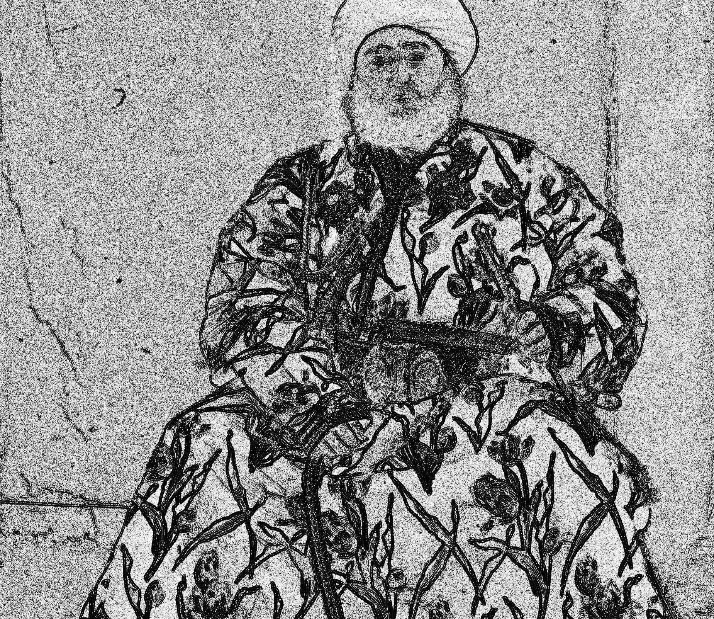

CS 194-26: Project 1
Alexander Kristoffersen, akristoffersen@berkeley.edu
The Prokudin-Gorskii photo collection is comprised of color images created by taking three separate photographs over
red, blue, and green filters. In order for these plates to come together as a full color image, they need to be overlayed
and aligned. The goal of this project is to do this automatically.
Approaches
To align the images, the RGB panels are cropped to exclude their edges. I then compute features for each of these
panels. The alignment is determined from the maximum dot product for each x,y offsets of the flattened R_FEATURE and
G_FEATURE, and the B_FEATURE and G_FEATURE.
Features to be used for alignment could not be just the raw panels, as the difference of base brightness of the panels would
scew the offsets. To fix this, I decided to try multiple high-pass filters on the panels as features, therefore focus more on
aligning the edges of the images.
I tried many different high-pass filters:
- 1D vertical difference (np.diff(image, axis=0))
- 1D horizontal difference (np.diff(image, axis=1))
- The concatenation of both horizontal and vertical differences
- Laplacian Edge Detector (convolve(image, Laplacian kernel))

Ultimately, I decided to go with the Laplacian convolution, as that seemed most accurate for both horizontal and vertical
offsets between the image set. I also normalized and used the histogram of the feature as a lookup table to give the features
additional contrast.
Results
| File Name |
Blue-to-Green Offsets |
Red-to-Green Offsets |
| church.tif |
(0, 0) |
(34, 0) |
| emir.tif |
(-45, -27) |
(57, 17) |
| harvesters.tif |
(-63, -18) |
(65, 0) |
| icon.tif |
(-45, -18) |
(48, 5) |
| lady.tif |
(-45, -9) |
(63, 4) |
| melons.tif |
(-81, -9) |
(99, 3) |
| onion_church.tif |
(-54, -27) |
(58, 10) |
| self_portrait.tif |
(-81, -27) |
(102, 8) |
| three_generations.tif |
(-54, -18) |
(61, 0) |
| train.tif |
(-45, -9) |
(43, 26) |
| workshop.tif |
(-54, 0) |
(53, 0) |
| cathedral.jpg |
(-6, -2) |
(7, 1) |
| monastery.jpg |
(2, -1) |
(6, 1) |
| tobolsk.jpg |
(-3, -3) |
(4, 0) |

Overall, the results look fairly aligned. There are some notable exceptions, however, such as church.tif and workshop.tif:
I suspect that this image got tripped up by the large amounts of noise in the ocean and sky. The laplacian edge detector is very
sensitive to noise, so this particular image would probably have done better with a larger gaussian blur before applying the kernel.
For workshop.tif, the multitude of horizontal and vertical lines tricked the alignment algorithm to give false positives.
A larger gaussian blur kernel before applying the laplacian may also have done this image well.